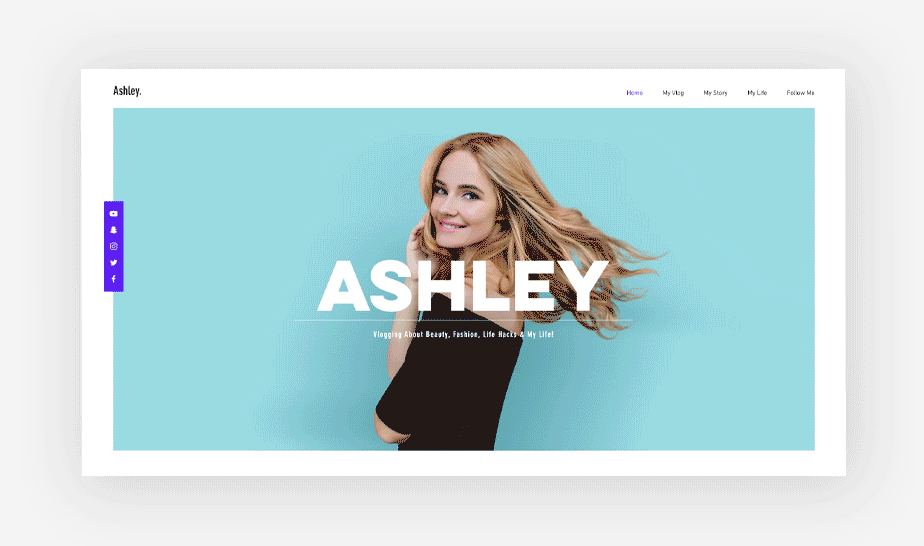

In this day and age, a world without the internet is unimaginable. With 5.56 billion
active users across the globe as of 2025, the web has become the main hub for sharing
and disseminating information - whether it’s updates about family, news in science
and politics, or entertainment passed between friends.
This transition to the online world has also changed the way businesses promote
their products and services. Like most things, the field of marketing has come to
revolve around the web—with website creation, social media and online ads
largely taking the place of billboards, cold calls and print ads.
In this guide, we’ll dive into what digital marketing is and how you can
use it to promote your brand via small business marketing plans. We’ll also break
down the different types of digital marketing so you can learn
about the specific practices that will benefit your business.
What is digital marketing?
Digital marketing is defined as the use of digital channels to promote a product or service. It's the opposite of offline marketing, for example. The goal of this approach is to connect with customers online—the place where they spend the most time seeking information or entertainment. With digital advertising revenue projected to surpass $700 billion by 2025, its impact and reach are impossible to ignore.
Digital marketing is a broad practice, simply because there are so many online channels available. Posting on social media is a form of digital marketing, as are email marketing and blogging. Together, the promotional content on these various platforms forms a cohesive online marketing strategy. Whether you are focusing on event marketing or creating an email subscriber list, digital marketing is an incredible important facet.
Benefits of digital marketing
Every company—from large international organizations to independent brick-and-mortar stores—can gain from advertising themselves online. Here are some of the ways digital marketing can benefit your business:
Building brand awareness by making your presence known and putting your
unique stamp on the web. Digital ads can increase brand awareness by up to 80%.
Targeting specific audiences based on demographics, interests and behaviors to
connect with the right people.
Engaging prospective customers and generating valuable leads that drive growth.
Measuring performance to understand what’s working, refine your strategy and maximize
your results.
Saving money with cost-effective strategies compared to traditional marketing methods.
Reaching customers worldwide and growing your audience beyond geographical boundaries.
Deepening customer relationships to build loyalty and encourage repeat business.
66% of marketers report that digital marketing tactics have increased their
company’s credibility and trust.
Guiding customers through the marketing funnel from their first interaction to
completing a sale.
Types of digital marketing
Digital marketing isn’t a single practice but, instead, is the sum of several elements. Some of the most
common examples of this marketing strategy include:
- Search engine optimization (SEO)
- Content marketing
- Social media marketing
- Pay per click (PPC)
- Native advertising
- Affiliate marketing
- Influencer marketing
- Email marketing
- Marketing automation
- Online PR
- Mobile marketing
- Conversion rate optimization (CRO)
While this may seem like a lot of different types of marketing, keep in mind that you don’t need to implement each and every one of these practices. However, it’s important that you familiarize yourself with them so that you gain a better understanding of which methods should go into your own internet marketing strategy.
01. Search engine optimization (SEO)
A foundational element of digital marketing, SEO is the practice of optimizing your website to rank higher in search engine results. When your website appears as a top result on Google and other search engines, people are more likely to click on your link, learn about your brand, and perhaps even become customers.
On-page SEO involves optimizing the pages on your website by conducting keyword research. When you incorporate strategic keywords throughout your site, you can rank high on search engine results pages and guide customers through the sales funnel with relevant, authoritative content.
Off-page SEO is about improving your SEO by looking at pages external to your website. Inbound links to your website—known as backlinks—are a critical component of off page SEO. Networking with publishers, writing guest posts, and providing information-rich content on your blog can help improve your off-page SEO.
Technical SEO deals with the backend elements of your website such as coding, structured data, image compression and more. Optimizing these elements can make it easier for search engines to “read” your site and improve your page speed.
02. Content marketing
Closely tied to SEO, content marketing is also a core component of digital marketing.
This involves creating and promoting content with the goals of building brand awareness, increasing traffic to your website, generating leads and converting customers.
Blog posts: Creating a blog - and using strategic, long tail keywords
in your articles - is a great way to bring traffic to your site
and engage your customers.
Ebooks and white papers: Adding in-depth, long-form content to your
website establishes your expertise in the industry and builds trust among
your audience. You can also offer this content for download in exchange
for your readers’ contact information, helping you generate leads.
Videos:Videos: Website content doesn’t need to be in written form.
Adding videos to your website is an engaging way to provide
valuable information to your audience.
Infographics: Another form of visual content, infographics are
a fun, helpful way to make information easier for readers to conceptualize.
Complex explanations and statistics are particularly well-suited to this
content format. Learn more about how to make an infographic with Wixel.
Podcasts: This audible content format is a useful way to strengthen
your connection with your audience and build a loyal community around your
brand. Content can be interview-based or niche-focused like Wix's SERP's Up
SEO Podcast. To start a podcast, try repurposing existing website
content, such as blog posts, and adapting it for audio.
Webinars: A merging of “web” and “seminar,” webinars further engage
your audience, establish your authority, and delight customers with
the extra value they provide.
Whichever content formats you choose, be sure to focus on subject
matter that’s relevant and valuable for your audience and that will help boost your website’s SEO.

03. Social media marketing
Another cornerstone of a strong digital marketing strategy
is social media marketing. This involves promoting your brand on social channels in order
to increase brand awareness, drive traffic to your website, and capture leads. You can
do this by creating posts on popular social media channels such as:
- YouTube
Your posts can include anything from insightful blog articles to videos of your product in action. Choose channels on which your audience is most active; often, this is a factor of their demographics, such as age and location, as well as their interests. You can even invest in sustainable marketing in these channels, which has become popular as consumer demand for environmentally-friendly products has grown.
04. Pay per click (PPC)
Some digital marketing methods, such as blogging, SEO, and social media posting are
organic—meaning that they draw traffic “naturally” to your business rather than requiring
that you spend money directly. Other practices, however, come with a price tag.
PPC, an acronym for pay per click, is a particularly powerful form of paid online advertising.
Like SEO, PPC is a type of search engine marketing, or SEM. If you’re familiar with
posts labeled “Ad” at the top and bottom of Google search results pages,
you’ve already seen PPC in action.
By this model, advertisers pay a fee every time their link is clicked. As with other
forms of digital marketing, the goal of PPC is to drive traffic to a website
in order to generate leads and make sales.
Generally, PPC is used on either search engines or social media platforms:
Google: Search engine marketing PPC is most commonly associated with
Google Ads. Take a look at this article to learn how to advertise on Google.
Facebook: You can further use the pay per click model to advertise on Facebook.
Creating paid Facebook posts helps you expand your reach, exposing
your content to people who don’t follow you.
LinkedIn: You can also do PPC on LinkedIn, helping you get in front of a
professional audiences.
Twitter: Likewise, you can use Twitter Ads to target your relevant audience and
expand your reach.
05. Native advertising
Native advertising, too, is a popular online marketing model. In contrast to large
pop-ups and other intrusive ads, native ads match the format and tone of the
platform on which they appear. Native ads often appear on websites, and
they display content that “blends in” with surrounding articles or blog posts.
For example, they might appear as a video embedded within a blog post, or as recommended
reading at the bottom of the page.
The goal of native advertising is to guide users to click on content
that will take them to your company’s page. If the advertised content is unobtrusive
and highly relevant to the material at hand, users may be more
enticed to click.
Discover the latest trends in video marketing with these video marketings statistics.

06. Affiliate marketing
Affiliate marketing is a digital marketing practice in which one party, such as an
influencer or a brand, receives a commission for promoting someone else’s products
or services. For businesses, this practice is beneficial because it
allows them to reach that party’s followers.
By the affiliate marketing model, a company provides that party (called the affiliate)
with a special link, usually leading to a page to purchase their product. The affiliate,
in turn, will post about that product (usually on their blog or social media pages),
promoting the given link in their content. When users click on that link and buy,
it’s a win-win for both the brand and the affiliate: the company makes a sale, and the
affiliate earns a commission on that sale.
Brands can connect with affiliates using platforms such as ShareASale or CJ
Affiliate, or by reaching out to influencers directly.
07. Influencer marketing
This practice is similar to affiliate marketing in that it involves another
person promoting your brand, typically on social media or within their
blog. Unlike affiliates, however, influencers get paid by the company
simply for the promotion - regardless of whether people actually
purchase the product.
Influencer marketing is effective because it helps brands
reach a particular influencer’s fanbase. When that influencer is trusted among their followers,
they have the power to sway their fans’ purchasing decisions by recommending a product.
On the business side, the key to a successful partnership is to choose influencers whose audience
matches your target market. For example, a company selling athletic wear would
benefit most from collaborating with a well-known athlete. Likewise, a business selling cosmetics
would be wise to seek out a collaboration with a beauty influencer.
08. Email marketing
You’ve almost certainly experienced email marketing in some form - in fact,
you probably have branded emails sitting in your inbox right now. This popular digital marketing
strategy involves communicating with your target audience via email with the goals of improving engagement,
promoting products and driving conversions and sales.
Broadly speaking, there are four different types of marketing emails you can send
to prospects and customers:
Email campaigns promote products, provide special offers or coupons, or
encourage people to sign up for a product or service.
Email newsletters are sent on a consistent basis to provide subscribers with regular
updates, such as new blog posts, industry news or upcoming events.
Automated marketing emails are sent automatically based on predefined triggers,
and they include welcome emails, birthday emails and reminder emails.
Automated transactional emails include automatic order confirmations, shipping updates
and appointment reminders.
You can use Wix Email Marketing to set up email campaigns, newsletters and automations
for your business. This platform is particularly effective because it tracks statistics on
email opens, views and clicks, giving you insight into your business’s performance. It also allows
you to customize the design of your emails so that they match the look and feel
of your brand.
09. Marketing automation
Speaking of automated emails - they’re examples of a broader digital marketing practice
called marketing automation. As the name suggests, this involves the automation
of basic marketing tasks.
The idea behind this practice is to streamline repetitive tasks that would
otherwise be done manually, such as transactional emails, data analysis and more.
Some tasks that benefit from automation include:
Thank you, confirmation and welcome emails
Social media post scheduling
Live chat
Data analytics
Marketing automation is a critical way to build relationships with your customers
while sustaining an organized and productive workflow.

10. Online public relations (PR)
Online PR is the practice of obtaining coverage from online publications and blogs.
This tends to require outreach to reporters and editors at relevant publications,
which you can do through LinkedIn or Twitter.
PR also involves monitoring your brand’s reputation on the web overall.
For example, you’ll need to engage with comments on your blog and social media
posts, as well as respond to online reviews of your company.
11. Mobile marketing
Often, converting customers through the screens of their laptops seems like
the ultimate goal. It’s important, however, that we also take full
advantage of a smaller - but equally important - device: the smartphone. This
is especially important considering that mobile internet usage comprises more than 50%
of online traffic worldwide.
Mobile marketing involves adapting standard digital marketing practices to fit the
mobile experience. This includes:
Optimizing your mobile page speed: Google uses page speed as a ranking factor
for mobile as well as desktop search. In addition, users are quick to navigate away
from a site with a slow load time. To improve the speed of your mobile site, try to keep
your site lightweight—for instance, avoid heavy images, and minimize redirects.
Designing your website for mobile: Your site is a fundamental marketing tool that
represents your brand, showcases your product or service, and persuades people
to buy. As such, the way it appears on mobile plays a crucial role in whether or not
your audience will convert. Take a look at this article for mobile website design examples and tips.
Creating mobile-friendly emails: Research shows that mobile accounts for nearly
half of all email opens. With this in mind, it’s critical that your email campaigns
are designed for the mobile screen. That means short subject lines, concise text and a
clear and prominent CTA.
Experimenting with in-app ads: Don’t limit your ads to websites and search engines.
Advertising within relevant mobile apps (as well as ASO marketing) is also a
valuable practice that can expand your reach even further.
12. Conversion rate optimization (CRO)
If we need to sum up the goals of digital marketing, we’d say it’s about
bringing traffic to your site and increasing conversions. This latter
component—called conversion rate optimization—requires designing your
website with an understanding of the way users interact with it.
To do this, you’ll need to take into account how users navigate your site,
which actions they take, and what guides them toward—or prevents them
from—achieving your goals. Tracking tools and analytics can provide you
with quantitative data about the ways users engage with your site, helping you
guide them smoothly through the sales funnel.
How to create a digital marketing strategy
Creating a digital marketing strategy might sound like a big task, but with the
right steps, you can build a plan that works for your business and helps you reach your goals:
1. Define your goals: Decide what you want to achieve. Are you looking to increase traffic, drive leads or
grow sales? Your goals will give your plan direction.
2. Identify your target audience: Get to know your customers. Think about their interests, demographics and
how your product or service fits into their lives.
3. Choose the right channels: Pick platforms where your audience spends time, like social media, email or
search engines, to connect with them effectively.
4. Create compelling content: Make content that resonates with your audience. Whether it’s videos, blogs
or ads, focus on content that is engaging and relevant.
5. Measure and refine: Keep track of how things are going. Check clicks, views or conversions and
use what you learn to improve your strategy.
Why you need digital marketing
Overall, digital marketing is a broad concept that covers a variety of practices and uses a wide range of online channels. Underlying these different elements, however, is a common theme - the ability to take advantage of the huge marketplace of prospective customers online.
Whether you decide to grow your blog, create an email newsletter or advertise on Google, you’ll be able to bring more traffic to your site, build stronger connections with your customers, and track and measure your results. Not only will this help you gain customers in the short term, but it will also help you build a sustainable, long-term strategy for future improvement and growth.